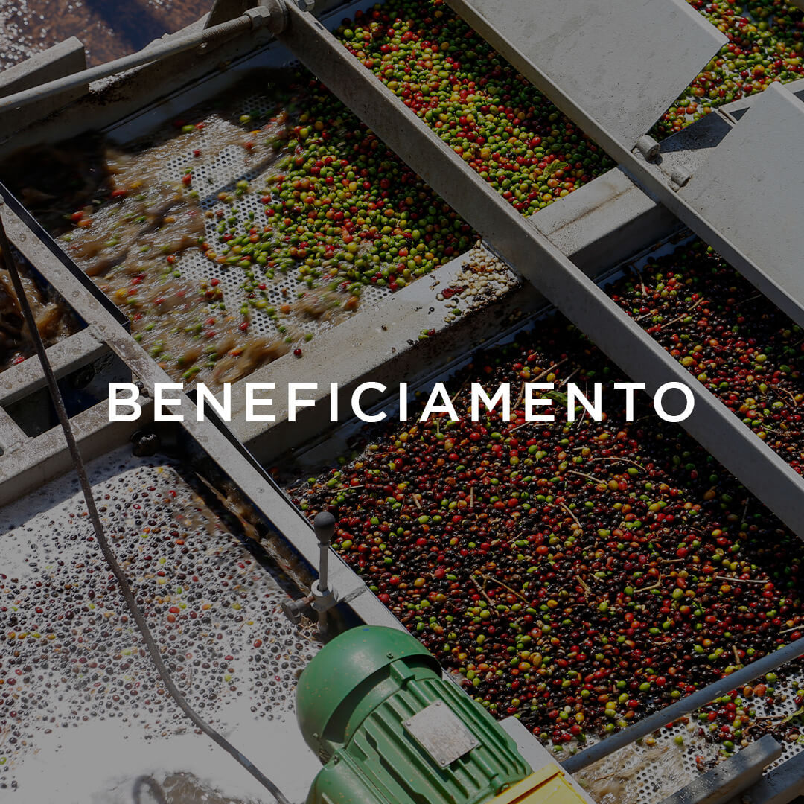
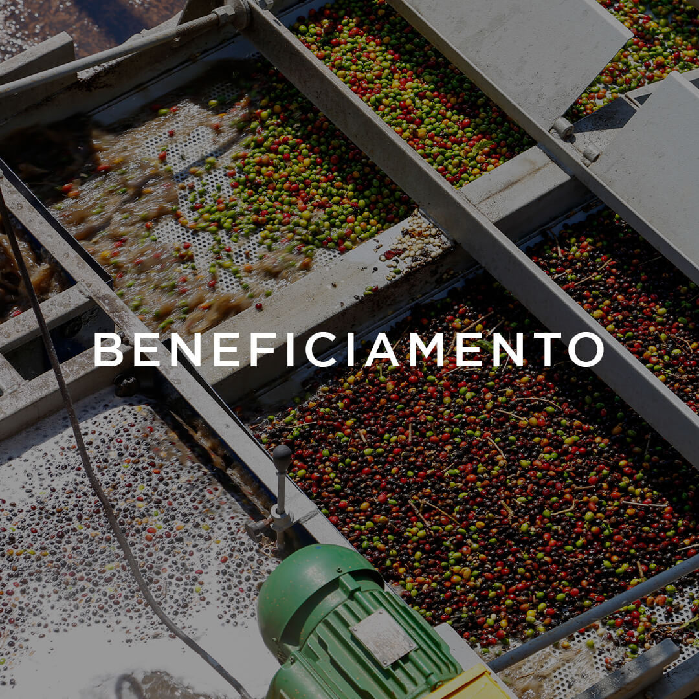
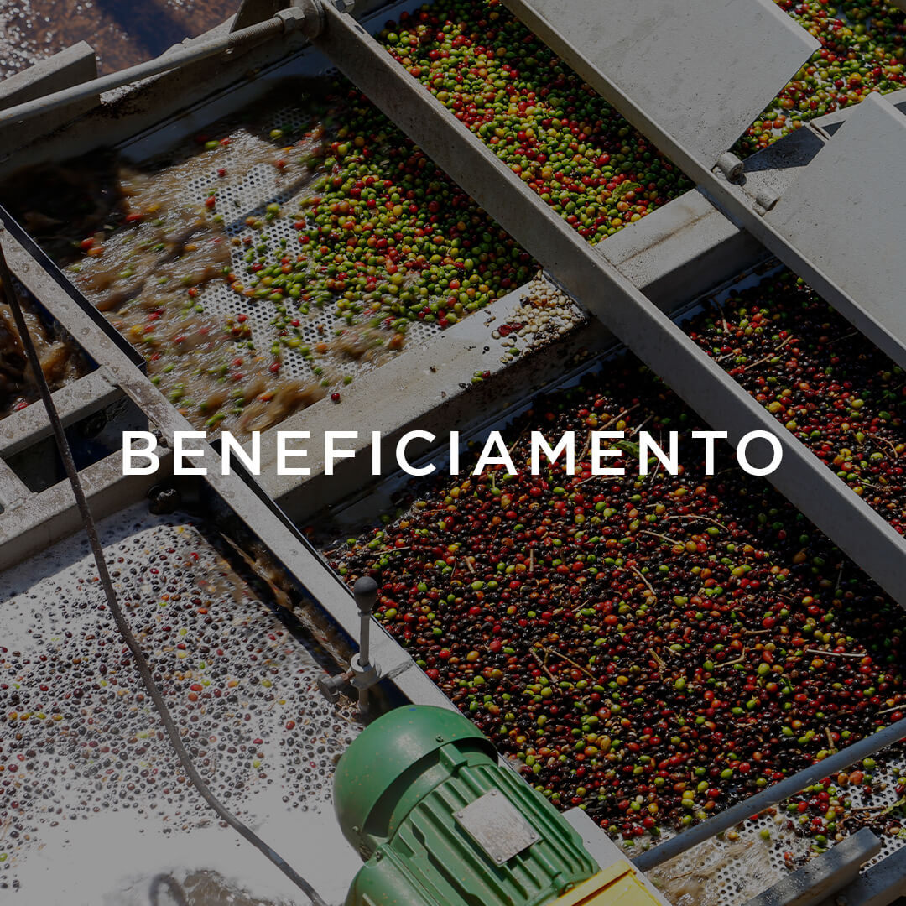
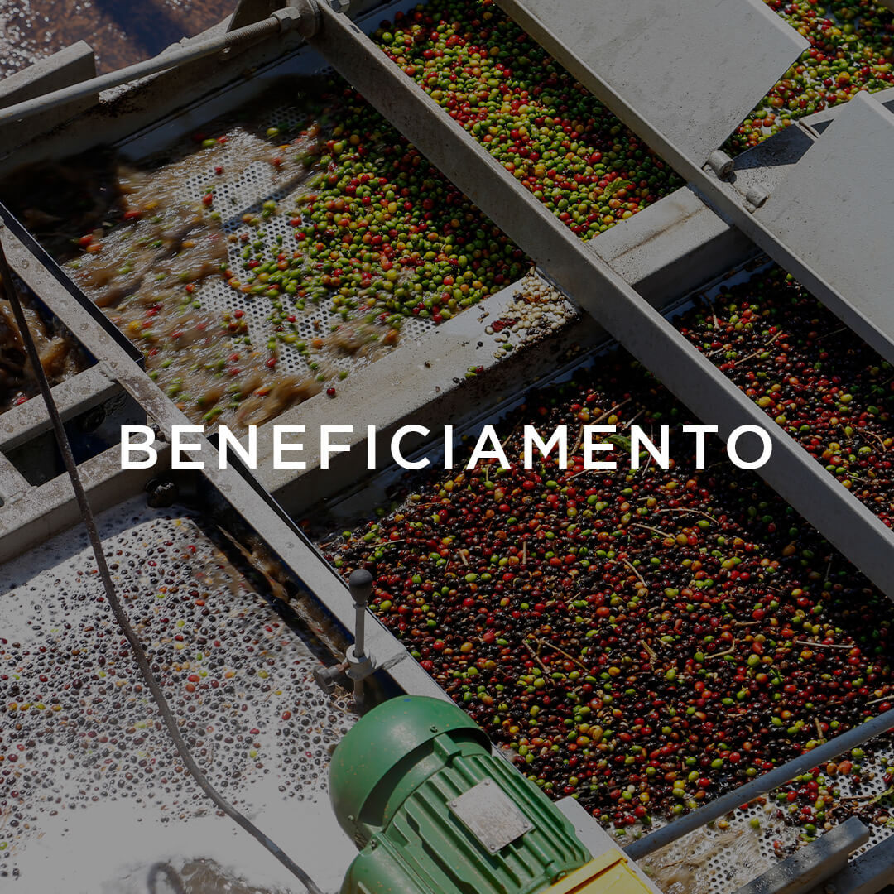
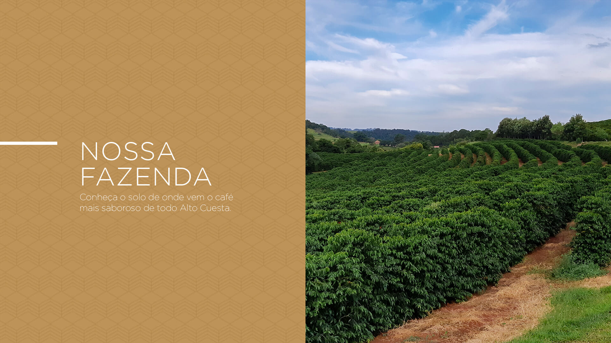
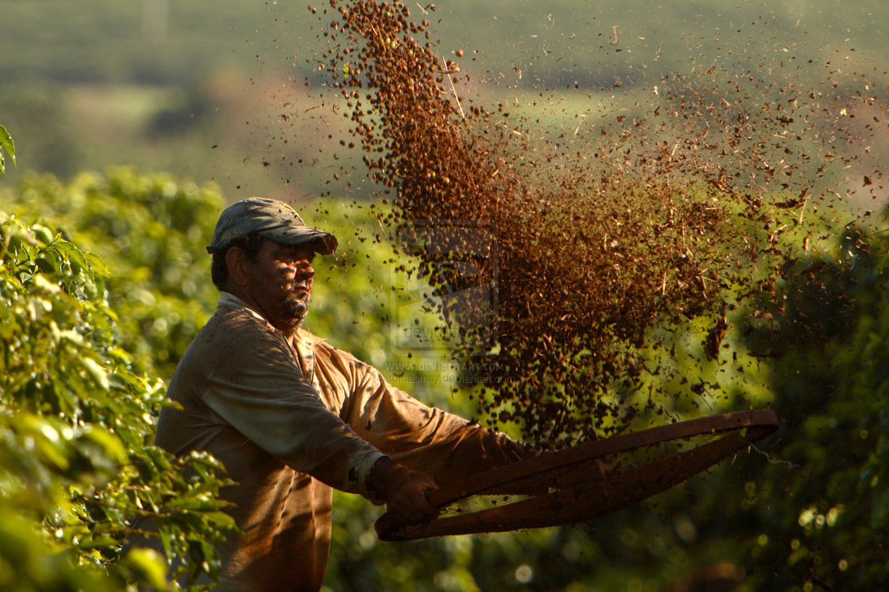

Localizada na região do Alto Cuesta, nossa fazenda tem uma história de cultivo de café que começou a ser escrita em 1881. Ao longo dos anos, o encontro perfeito entre a geografia, o clima e a qualidade do solo, com plantas cuidadosamente selecionadas, resultou no surgimento de um autêntico Terroir. Nas edições especiais, Microlote, nas variedades exclusivas Cereja e Jasmim, ou ainda no surpreendente Bourbon da região, Cuesta Cafés Especiais oferece sabores e aromas que vão transportar você para um dos cenários mais incríveis do Brasil. Cuesta Cafés Especiais, desde 1881, o Original do Alto Cuesta.

Composto de grãos nobres, selecionados artesanalmente, nossos cafés especiais podem ser apreciados em três diferentes tipos: Bourbon, Cereja e Jasmim, além do exclusivo Microlote.

O Coffee Tour do Cuesta Cafés Especiais é um programa turístico exclusivo que promove aos visitantes a oportunidade de conhecer de perto todas as etapas do cultivo de um café especial, do plantio à xícara. O programa ainda possibilita uma visita única à nossa fazenda histórica São Pedro do Pardinho, com suas edificações datadas do século XIX.
1-Trilha pela plantação da fazenda
2-Café da tarde com direto a grãos colhidos na hora
3-Palestra e demonstração de como são preparados os melhores cafés
4-tour por toda a fazenda, do processo da colheita até a xicara da mesa
5-brindes surpresas no final do passeio
6-Voucher de desconto para produtos em nosso espaço
Workshop de introdução aos cafés de qualidade, de forma prática, preparando nossa linhas de cafés especiais em diversos métodos e com dicas valiosas para extrair o melhor do seu café em casa. Venha conhecer a Fazenda São Pedro do Pardinho, provar nossos cafés e aprender mais sobre uma das bebidas mais consumidas do mundo.
A Fazenda São Pedro do Pardinho fica numa região linda, conhecida como Cuesta de Botucatu. A região do Pólo Cuesta possui um dos maiores reservatórios de água doce e potável do planeta. Com altitude de 900 a 1050 metros, a região possui clima ameno, com temperatura média anual de 19°C , o qual propicia a produção de café de extrema qualidade. Devido as características da região, a colheita é mais tardia, possibilitando que o fruto absorva o máximo de nutrientes da planta, resultando em uma bebida com característica únicas.
Descricao da fazenda aqui
descricao da fazenda aqui